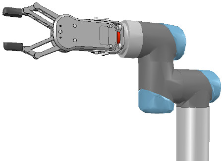

Week13~15 <<
Previous Next >> Note
WEEK16~18
WEEK16
WEEK17
We now run the simulation: the robot will collapse, since the joints are not controlled by default. When we added the joints in the previous stage, we created joints in force/torque mode, but their motor or controller was disabled (by default). We can now adjust our joints to our requirements. In our case, we want a simple PID controller for each one of them. In the joint dynamic properties, we click Motor enabled and adjust the maximum torque. We then click Control loop enabled and select Position control (PID). We now run the simulation again: the robot should hold its position. Try to switch the current physics engine to see if the behaviour is consistent across all supported physics engines. You can do this via the appropriate toolbar button, or in the general dynamics properties.
現在我們運行模擬：由於默認情況下關節不受控制，因此機器人將崩潰。 在上一階段添加關節時，我們以力/扭矩模式創建了關節，但其電動機或控制器已禁用（默認情況下）。 現在，我們可以根據需要調整關節。 在我們的案例中，我們希望為每個控制器都提供一個簡單的PID控制器。 在關節動態屬性中，單擊“啟用電機”並調整最大扭矩。 然後，單擊啟用控制環，然後選擇位置控制（PID）。 現在，我們再次運行仿真：機器人應保持其位置。 嘗試切換當前的物理引擎，以查看行為在所有受支持的物理引擎之間是否一致。 您可以通過相應的工具欄按鈕或在常規動力學屬性中執行此操作。
During simulation, we now verify the scene dynamic content via the Dynamic content visualization & verification toolbar button. Now, only items that are taken into account by the physics engine will be display, and the display is color-coded. It is very important to always do this, and specially when your dynamic model doesn't behave as expected, in order to quickly debug the model. Similarly, always look at the scene hierarchy during simulation: dynamically enabled objects should display a ball-bounding icon on the right-hand side of their name.
在仿真過程中，我們現在通過“動態內容可視化和驗證”工具欄按鈕來驗證場景動態內容。 現在，將僅顯示物理引擎考慮的項目，並且該顯示使用顏色編碼。 始終執行此操作非常重要，尤其是在動態模型無法按預期運行時，為了快速調試模型，尤其如此。 同樣，在仿真過程中請始終查看場景層次：動態啟用的對象應在其名稱的右側顯示一個球形圖標。
Finally, we need to prepare the robot so that we can easily attach a gripper to it, or easily attach the robot to a mobile platform (for instance). Two dynamically enabled shapes can be rigidly attached to each other in two different ways:
*by grouping them: select the shapes, then [Menu bar --> Edit --> Grouping/Merging --> Group selected shapes].
*by attaching them via a force/torque sensor: a force torque sensor can also act as a rigid link between two separate dynamically enabled shapes.
最後，我們需要準備機器人，以便我們可以輕鬆地將抓取器連接到它，或輕鬆地將機器人連接到移動平台（例如）。 可以通過兩種不同的方式將兩個動態啟用的形狀嚴格地彼此附加：
*通過對它們進行分組：選擇形狀，然後選擇[菜單欄->編輯->分組/合併->對選定形狀進行分組]。
*通過通過力/扭矩傳感器進行連接：力扭矩傳感器還可以充當兩個單獨的動態啟用形狀之間的剛性鏈接。
In our case, only option 2 is of interest. We create a force/torque sensor with [Menu bar --> Add --> Force sensor], then move it to the tip of the robot, then attach it to object robot_link_dyn6. We change its size and visual appearance appropriately (a red force/torque sensor is often perceived as an optional attachment point, check the various robot models available). We also change its name to robot_attachment:
在我們的情況下，只有選項2是有意義的。 我們使用[菜單欄->添加->力傳感器]創建一個力/扭矩傳感器，然後將其移動到機器人的尖端，然後將其附加到對象robot_link_dyn6。 我們會適當地更改其尺寸和外觀（紅色力/扭矩傳感器通常被視為可選的連接點，請檢查可用的各種機器人型號）。 我們還將其名稱更改為robot_attachment：

Now we drag a gripper model into the scene, keep it selected, then control-click the attachment force sensor, then click the Assembling/disassembling toolbar button. The gripper goes into place:
現在，我們將抓手模型拖到場景中，使其保持選中狀態，然後按住Control鍵單擊並單擊附著力傳感器，然後單擊“裝配/拆卸”工具欄按鈕。 夾持器到位：

The gripper knew how to attach itself because it was appropriately configured during its model definition. We now also need to properly configure the robot model, so that it will know how to attach itself to a mobile base for instance. We select the robot model, then click Assembling in the object common properties. Set an empty string for 'Parent' match values, then click Set matrix. This will memorize the current base object's local transformation matrix, and use it to position/orient itself relative to the mobile robot's attachment point. To verify that we did things right, we drag the model Models/robots/mobile/KUKA Omnirob.ttm into the scene. Then we select our robot model, then control-click one of the attachment points on the mobile platform, then click the Assembling/disassembling toolbar button. Our robot should correctly place itself on top of the mobile robot:
抓具知道如何附加自身，因為它在模型定義期間進行了適當的配置。 現在，我們還需要正確配置機器人模型，以便它將知道如何將自己附加到移動基座上。 我們選擇機器人模型，然後在對象公共屬性中單擊“組裝”。 為“父項”匹配值設置一個空字符串，然後單擊“設置矩陣”。 這將記住當前基礎對象的局部轉換矩陣，並使用它相對於移動機器人的附著點定位/定向。 為了驗證我們做的正確，我們將模型Models / robots / mobile / KUKA Omnirob.ttm拖到場景中。 然後，我們選擇機器人模型，然後在移動平台上按住Control鍵並單擊其中一個附接點，然後單擊“組裝/拆卸”工具欄按鈕。 我們的機器人應該正確地將自己放置在移動機器人的頂部：

Now we could add additional items to our robot, such as sensors for instance. At some point we might also want to attach embedded scripts to our model, in order to control its behaviour or configure it for various purposes. In that case, make sure to understand how object handles are accessed from embedded scripts. We can also control/access/interface our model from a plugin, from a remote API client, from a ROS node, from a BlueZero node, or from an add-on.
現在，我們可以向機器人添加其他項目，例如傳感器。 在某些時候，我們可能還希望將嵌入式腳本附加到我們的模型中，以便控制其行為或出於各種目的對其進行配置。 在這種情況下，請確保了解如何從嵌入式腳本訪問對象句柄。 我們還可以通過插件，遠程API客戶端，ROS節點，BlueZero節點或附加組件來控制/訪問/接口模型。
Now we make sure we have reverted the changes done during robot and gripper attachment, we collapse the hierarchy tree of our robot model, select the base of our model, then save it with [Menu bar --> File --> Save model as...]. If we saved it in the model folder, then the model will be available in the model brower.
現在，確保已恢復在機械手和抓爪安裝過程中所做的更改，我們折疊了機械手模型的層次樹，選擇了模型的基礎，然後使用[菜單欄->文件->將模型另存為 ...]。 如果我們將其保存在模型文件夾中，則模型將在模型瀏覽器中可用。
任務2:
WEEK18
Week13~15 <<
Previous Next >> Note